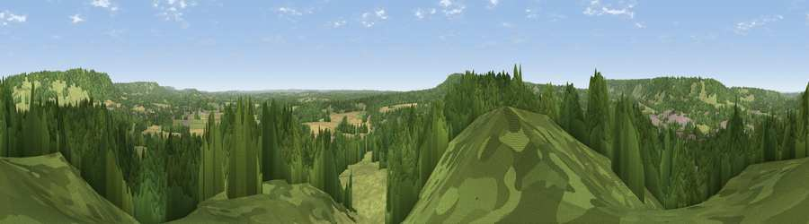

Viewpoint near Dorking
#21296 in England · top 16% of its area beats it · near DorkingWhere it is
The exact computed spot (TQ 17525 49025). Click the marker for map links.
The view, rendered

A 360° render of this exact spot computed from the terrain model, tree cover and land cover — summer colours, afternoon light, calibrated against photographs of famous viewpoints. Real trees, hedges and buildings will differ in detail.
The panorama
Grey silhouette: terrain skyline in each direction (720 bearings, Earth curvature and refraction included). Dashed green: skyline with trees (+15 m) and buildings (+8 m) as obstacles. Blue strip: how far the ground is visible on each bearing.
Where the view opens
Wedge length = distance to the farthest visible ground on that bearing (vegetation-aware). Rings at 10, 25 and 50 km.
What fills the view
60% woodland · 27% grassland · 7% cropland · 5% built-up
Angular shares of the visible panorama (visual magnitude), not map area. Landscape diversity 0.44 (0–1 Shannon).
Key numbers
More beautiful places nearby
The staircase of upgrades: each row has a higher view potential than everything closer. Driving times are estimates from straight-line distance, calibrated against real road routing — check an actual route before setting out.
| Place | Direction | Drive | Score |
|---|---|---|---|
| Box Hill Viewpoint | NNE · 2 km | ~6 min | 55.7 |
| Viewpoint near Dorking | WNW · 3 km | ~7 min | 55.9 |
| Viewpoint near Box Hill Village | NE · 3 km | ~7 min | 68.1 |
| Viewpoint near Box Hill Village | NE · 3 km | ~8 min | 71.0 |
| Viewpoint near Coldharbour | SSW · 6 km | ~13 min | 71.3 |
| Viewpoint near Fernhurst | SW · 32 km | ~50 min | 75.1 |
| Wolstonbury Hill | SSE · 37 km | ~55 min | 79.6 |
| Chanctonbury Ring | S · 37 km | ~56 min | 87.0 |
51.22832, -0.31823 · source: screening · position refined by local search. Computed location — check access rights before visiting.